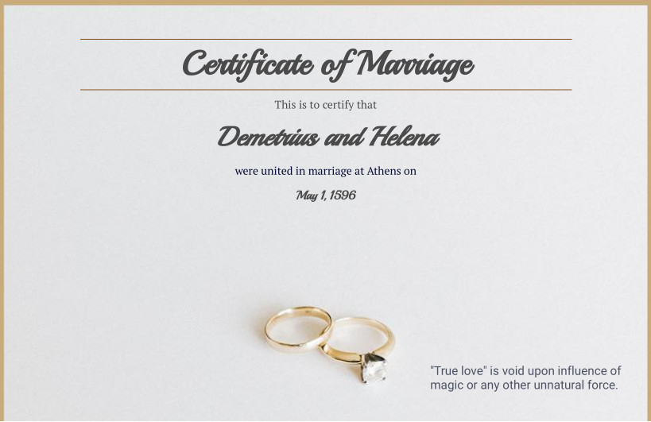

Artwork

In Shakespeare's "A Midsummer Night's Dream" there is the idea of "Artificial Love".
In the play this is expressed through the manipulation of emotions by magic, but "Fake Love" exists in the real world too, without the use of any magic.
Demetrius, originally in love with Hermia, is enchanted and suddenly adores Helena:
"O Helen, goddess, nymph, perfect, divine!" (Act II, Scene II).
Similarly, Lysander, under the same spell, abandons Hermia, declaring:
"Not Hermia but Helena I love" (Act II, Scene II).
The love potion in the play distorts the true emotions by replacing them with false ideas of love for another.
This isn't really too different from situations that happen in the real world.
For example, where a couple in a closed relationship have one person who becomes intrigued by another. (Often through carnal desire.)
Which person that they loved was the "True Love"? Did they really ever even love anyone in the first place?
The clause on the bottom-right of this marriage certificate reflects this idea of an "Artificial Love".
The idea is that True Love becomes voided upon the corruption of external forces, rather than remaining pure as a genuine emotional connection.